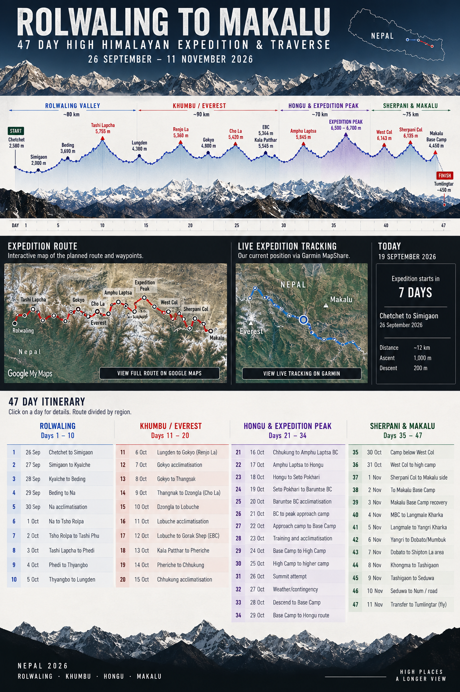

Planned Route
Interactive Google My Maps route and waypoints.

From Chetchet into the Rolwaling Valley, across Tashi Lapcha to the Khumbu, through the Hongu Valley and an additional high-altitude climbing week, then across West Col and Sherpani Col to Makalu Base Camp before descending to Tumlingtar.
Interactive Google My Maps route and waypoints.
Current position and satellite tracking via Garmin MapShare.
The Garmin page is kept separate from the planned route so the live satellite track remains clear and authoritative during the expedition.
View live Garmin tracking